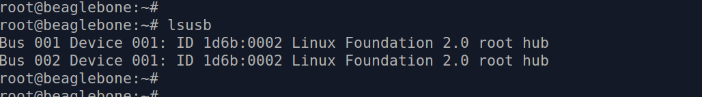
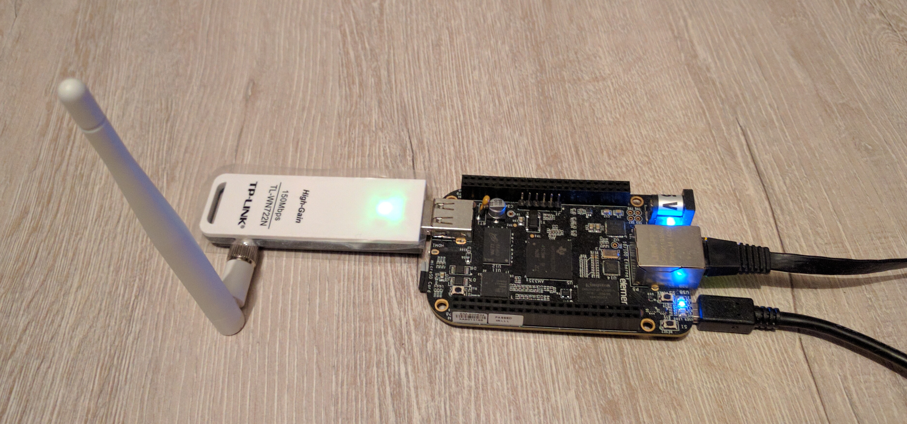

18 июня 2016
Подключаем Wi-Fi адаптер к микрокомпьютеру BeagleBoneBlack
В прошлый раз мы установили Kali linux на микрокомпьютер BeagleBoneBlack.
Сегодня мы настроим BeagleBoneBlack на работу с Wi-Fi адаптером TP-Link TL-WN722N.
Вам понадобятся:
- ПК под управлением Ubuntu или другого Linux-дистрибутива
- Микрокомпьютер BeagleBoneBlack
- Источник питания 5v miniUSB
- Карта microSD с уже установленной системой Kali linux
- Ethernet-кабель для подключения микрокомпьютера к маршрутизатору
- Wi-Fi адаптер TP-Link TL-WN722N
Как для любого нового устройства, нам нужно установить управляющую им программу - драйвер.
На вашем ПК, выполните подключение к BeagleBoneBlack:
$ ssh root@192.168.1.47
После ввода пароля, вы вошли.
Первым делом обновите содержимое репозиториев:
# apt-get update
Установите нужные утилиты и набор драйверов:
# apt-get install usbutils wireless-tools firmware-atheros
Выполните опрос подключенных к микрокомпьютеру USB-устройств:
# lsusb
Результат этой команды примерно будет таким:

Теперь воткните Wi-Fi адаптер в свободный USB порт на BeagleBoneBlack.
И опять выполните:
# lsusb
Результат:
Видно что в списке подключенных устройств появился адаптер на микросхеме AR9271 от Atheros Communications, это и есть наш Wi-Fi. Если в списке не появилось ничего нового - нужно перезагрузить микрокомпьютер не вынимая из него адаптер.
В данный момент устройство уже готово к работе, но не помешает точно убедиться что драйвера установлены правильно.
Для этого нужно посмотреть есть ли упоминания микросхем Atheros в активных (загруженных в память) модулях ядра Linux.
Выполните:
# lsmod
Результат этой команды примерно будет таким:
Видите различные строки начинающиеся на "ath"? Так и должно быть если все настроено правильно.
Включаем адаптер:
# ifconfig wlan0 up
На адаптере должен загореться зеленый свет, это значит он успешно включился.
Давайте посмотрим Wi-Fi сети вокруг:
# iwlist wlan0 scanning | egrep 'Cell |Encryption|Quality|Last beacon|ESSID'
Эта хитрая команда выдаст список всех видимых Wi-Fi сетей вокруг.
В итоге мы получили микрокомпьютер оснащенный отличным дальнобойным Wi-Fi:

Какие у этой штуки могут быть применения? Об этом мы и расскажем в ближайших публикациях.
Автор
© Dmytro Nikandrov